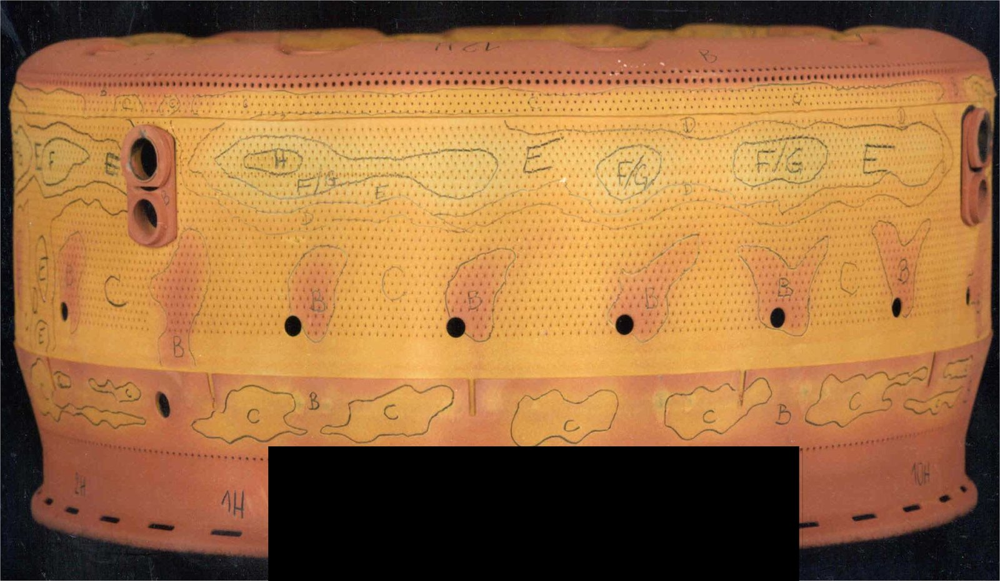
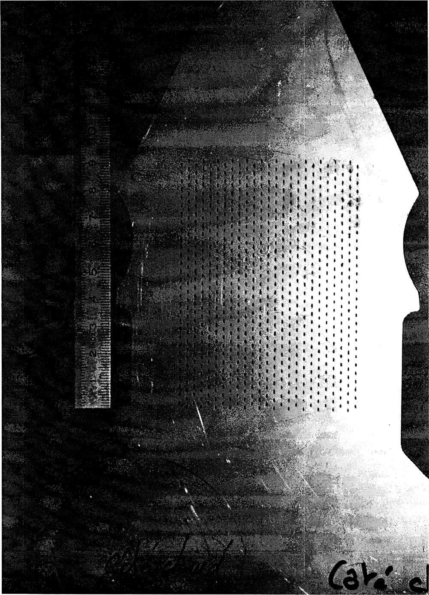
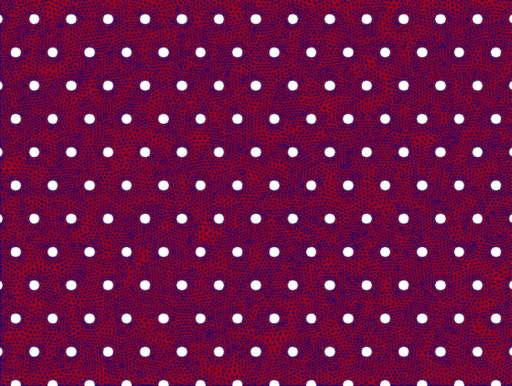
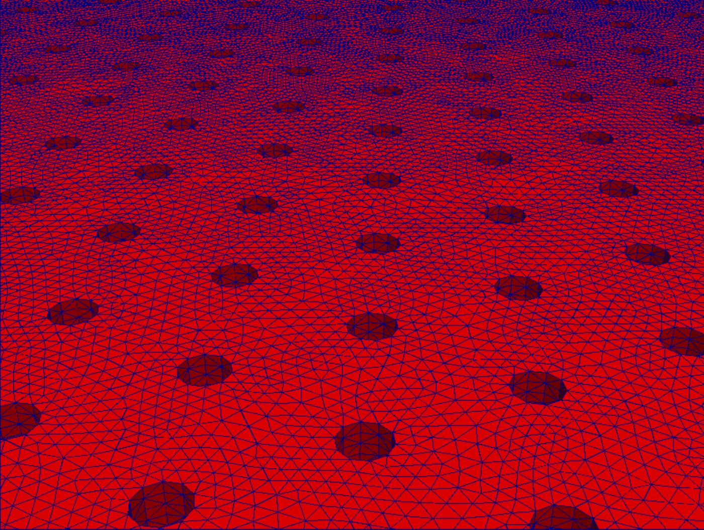
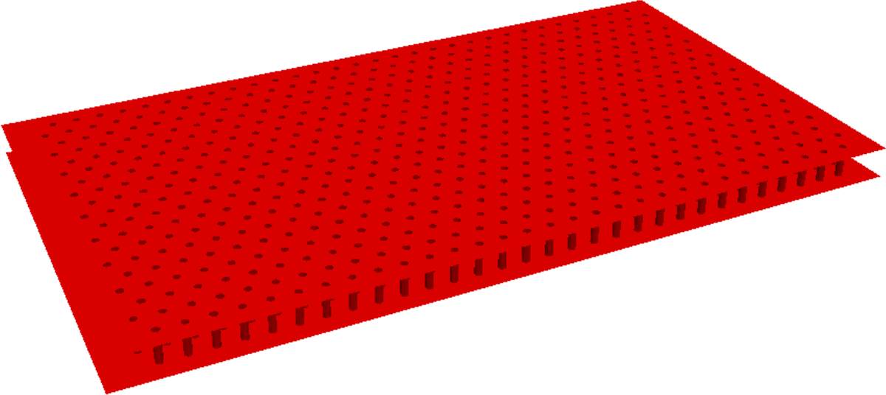

Les parois des chambres de combustion des moteurs d’avion et d’hélicoptère sont percées de milliers de petits trous : l’air injecté à travers ces perforations refroidit la paroi, mais il interagit aussi avec les modes acoustiques de la chambre et peut entretenir des instabilités de combustion. Les codes industriels ignorent ces perforations, beaucoup trop petites et trop nombreuses pour être maillées. Le projet APaM visait à construire des modèles mathématiques et des schémas numériques qui en rendent compte, puis à les valider expérimentalement et industriellement. The walls of aircraft and helicopter combustion chambers are drilled with thousands of small holes: air injected through these perforations cools the wall, but it also couples with the acoustic modes of the chamber and can sustain combustion instabilities. Industrial codes ignore these perforations, far too small and too many to be meshed. The APaM project aimed to build mathematical models and numerical schemes that account for them, and to validate them experimentally and industrially.


La démarcheApproach
Par la méthode des développements asymptotiques raccordés, chaque perforation est remplacée par un modèle effectif : la paroi devient une condition d’impédance portée par une surface sans trous, caractérisée par la conductivité de Rayleigh des ouvertures. Nous avons justifié mathématiquement ce modèle et montré qu’il reste valable dès que la distance entre deux trous voisins est inférieure à une demi-longueur d’onde, bien au-delà de l’hypothèse classique de grande longueur d’onde. Les effets de l’écoulement dans les perforations, d’abord négligés, ont ensuite été pris en compte par une modélisation adaptée aux petites échelles ; les résultats ont été confrontés aux mesures réalisées sur les bancs acoustiques de l’ONERA. Using matched asymptotic expansions, each perforation is replaced by an effective model: the wall becomes an impedance condition on a surface without holes, characterised by the Rayleigh conductivity of the apertures. We justified this model mathematically and showed that it holds as soon as the distance between neighbouring holes is less than half a wavelength, well beyond the classical long-wavelength assumption. Flow effects in the perforations, first neglected, were then included through suitable small-scale modelling; the results were compared with measurements on ONERA’s acoustic benches.



Publications
- Mathematical justification of the Rayleigh conductivity model for perforated plates in acoustics — A. Bendali, M. Fares, E. Piot, S. Tordeux, SIAM J. Appl. Math. 73(1), 2013
- Effective conditions for the reflection of an acoustic wave by low-porosity perforated plates — S. Laurens, E. Piot, A. Bendali, M. Fares, S. Tordeux, J. Fluid Mech. 743, 2014
- Lower and upper bounds for the Rayleigh conductivity of a perforated plate — S. Laurens, S. Tordeux, A. Bendali, M. Fares, P. R. Kotiuga, M2AN 47(6), 2013
- Explicit computation of the electrostatic energy for an elliptical charged disc — S. Laurens, S. Tordeux, Appl. Math. Letters 26(2), 2013
- Numerical study of acoustic multiperforated plates — A. Bendali, M. Fares, S. Laurens, S. Tordeux, ESAIM: Proceedings 37, 2012, pp. 166–177
- Modélisation asymptotique de la réponse acoustique de plaques perforées dans un cadre linéaire avec étude des effets visqueux — thèse dePhD thesis of V. Popie, ONERA – ISAE, 2016
Présentation du projet sur le site de l’ANR :Project page on the ANR website: ANR-08-SYSC-0001
← Retour au siteBack to main site